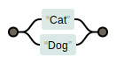
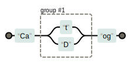
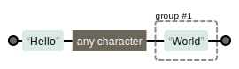

- 什么是正则表达式
Regular Expression 使用单个字符串来描述，匹配一系列符合某个句法规则的字符串 - 在线图形工具
Regexper
语法
RegExp
实例化RegExp
var reg = /\bis\b/gvar reg = new RegExp('\\bis\\b','g')上述例子是用来查找单词is，
\b代表单词边界
第二种表达方式中，\写了两次是因为在JS中\是特殊字符，需要转义
修饰符
g
全文搜索，若无此标志将只会搜索到第一个匹配(global)i
忽略大小写，默认大小写敏感(ignore case)m
多行搜索(multiple lines)，即将换行当作新的一行
元字符
- 原意文本字符
- 元字符
\t水平制表符\v垂直制表符\n换行符\r回车符\0空字符\f换页符\cXCtrl+X
字符类
可以使用[]来构建一个简单的类，如[abc]代表只要有abc中任意一个即匹配
字符类取反,[^abc]顾名思义即不是字符a或b或c
范围类
[a-z] 连写[a-zA-Z]
若想匹配-，则写为[a-z-]
预定义类
.除回车符和换行符之外的所有字符\d数字字符\D非数字字符\s空白符\S非空白符\w单词字符(字母，数字下划线)\W非单词字符
边界
^以xxx开始,若^存在于[]中则代表非$以xxx结尾\b单词边界\B非单词边界
量词
?出现0次或1次(最多一次)+出现1次或多次(最少一次)*出现0次或多次(任意次){n}出现n次{n,m}出现n到m次{n,}至少出现n次
贪婪模式/非贪婪模式
|
|
|
|
分组
例如我们想将Byron匹配三次
Byron{3}只能重复n3遍,而不是全单词(Byron){3}才能达到效果Cat|Dog可以分为两个分支
而Ca(t|D)og可以只对t和D进行分支反向引用
12'2016-8-23'.replace(/(\d{4})-(\d{1})-(\d{2})/,'$2-$3-$1');// 8-23-2016忽略分组
(?:Hello).(World)
前瞻
- 正则表达式从文本头部向尾部解析，所以文本尾部方向称为”前”。
- 前瞻就是在正则表达式匹配到规则的时候，向前检查是否符合断言，后顾与之相反。
- JS不支持后顾。
- 符合和不符合特定断言成为肯定/正向匹配和否定/负向匹配。
正向前瞻exp(?=assert)负向前瞻exp(?!assert)12'a2*34vv'.replace(/\w(?=\d)/g,'X');//X2*X4vv
对象属性
global是否全文搜索 默认falseignoreCase是否大小写敏感 默认falsemultiline多行搜索 默认falselastIndex当前表达式匹配内容的最后一个字符的下一个位置source正则表达式的文本字符串
对象方法
RegExp.prototype.test(str)
测试字符串参数中是否存在匹配正则表达式的字符串
注意这里有个坑！1234567891011121314var reg1 = /\w/;var reg2 = /\w/g;console.log(reg1.test('a')); //trueconsole.log(reg1.test('a')); //trueconsole.log(reg1.test('a')); //trueconsole.log(reg2.test('a')); //trueconsole.log(reg2.test('a')); //falseconsole.log(reg2.test('a')); //true//由于设置g之后，每次正则表达式都会定位到//匹配内容最后一个字符的下一个位置，//因此会出现这种情况(lastIndex相关)RegExp.prototype.exec(str)- 使用正则表达式模式对字符串执行搜索，并将更新全局
RegExp对象的属性以反映匹配结果： - 若没有匹配文本则返回
null，否则返回一个数组index(声明匹配文本的第一个字符位置)input(存放被检索的字符串string) - 非全局调用/全局调用12345678910111213141516var reg1 = /\d(\w)\d/;var reg2 = /\d(\w)\d/g;var ts = '1a23b45c6';var res = reg1.exec(ts);console.log(reg1.lastIndex+' '+res.index+' '+res);//0 0 1a2,a//在非全局调用中lastIndex不起作用while(res = reg2.exec(ts)){console.log(reg2.lastIndex+' '+ret.index+' '+ret)};//3 0 1a2,a//6 3 3b4,b//9 6 5c6,c//数组中最后一个为分组搜索结果
- 使用正则表达式模式对字符串执行搜索，并将更新全局
字符串中可以使用正则的方法
String.prototype.search(reg)
- 检索字符串中指定的子字符串/与正则表达式相匹配的子字符串
- 方法返回第一个匹配结果index，找不到返回-1
- 不执行全局匹配，忽略标志g，且总是从开头进行检索
String.prototype.match(reg)
- 检索字符串，以找到一个或多个匹配文本
- RegExp是否具有标志g对结果有影响
- 未找到返回null，找到则返回一个数组
String.prototype.split(reg)
将字符串分割为字符数组
1'a,b,c,d'.split(',');//['a','b','c','d']使用正则表达式
1'a1b2c3d4'.split(/\d/);//['a','b','c','d']
String.prototype.replace(reg,string/function)
函数参数
- 匹配字符串
- 分组内容，无分组则没有该参数
- 匹配项index
- 原字符串
|
|